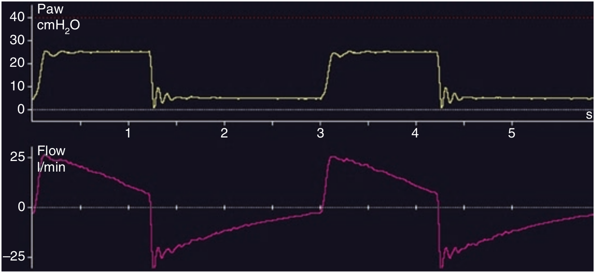

به ازای هر تعداد تنفس افزایش زمان دم سبب کاهش زمان بازدم میگردد. با افزایش تدریجی مدت زمان دم نسبت به بازدم به جائی می رسیم که اتساع مفرط دینامیک شروع میشود که موجب افزایش PEEPTOT و کاهش حجم جاری میگردد.

با توجه به تصویر فوق، کدام گزینه زیر برای افزایش تهویه حبابچه ای مفید است؟
۱ - افزایش تعداد تنفس
۲ - افزایش PINSP
۳ - افزایش زمان دم
۴ - افزایش PEEP
۵ - تمام موارد فوق